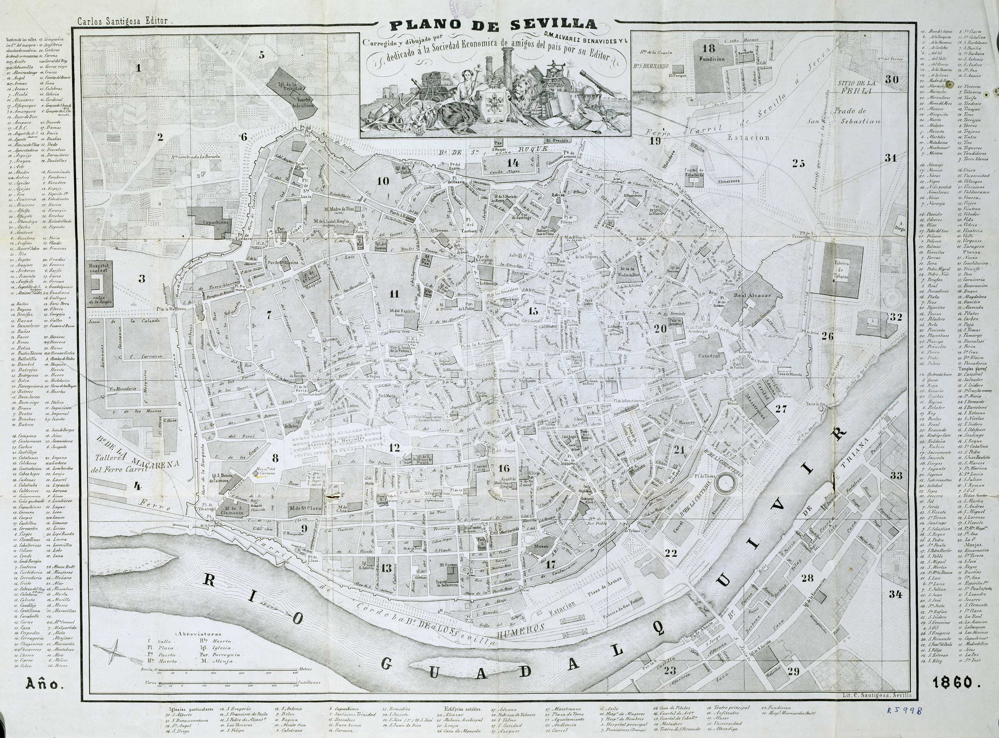
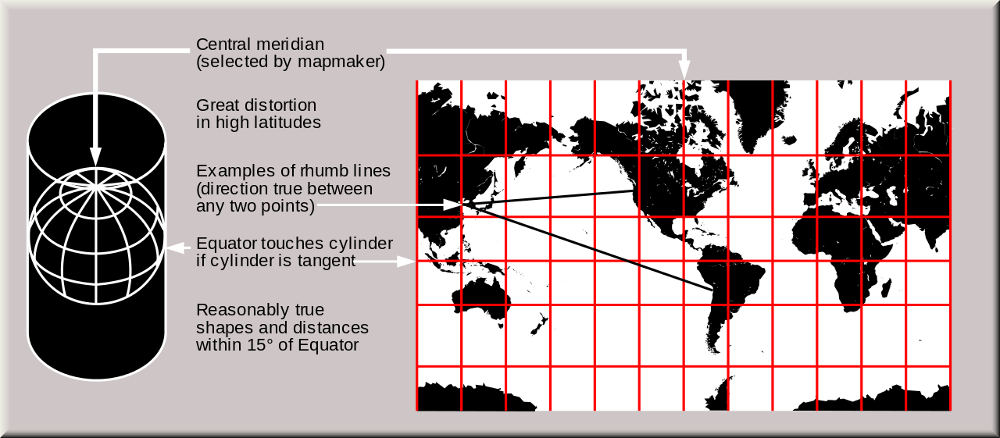
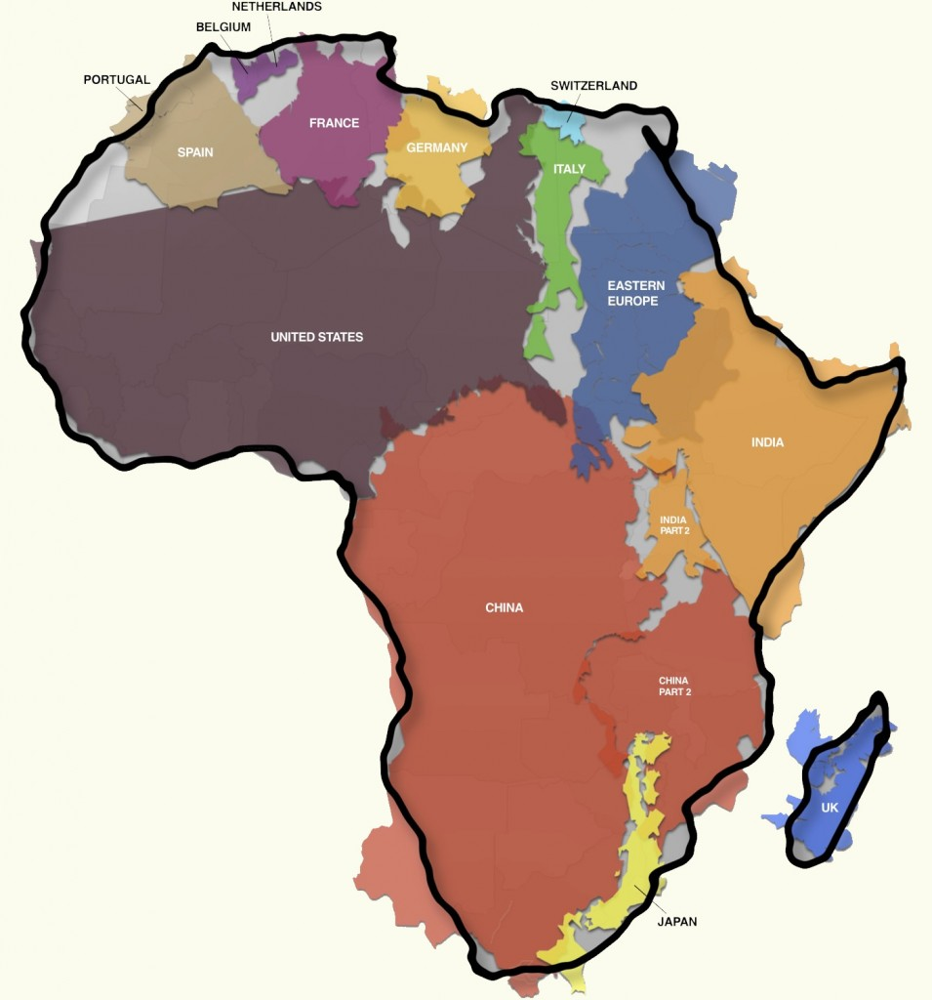
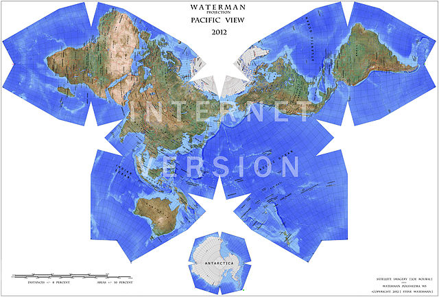
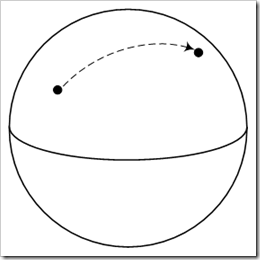
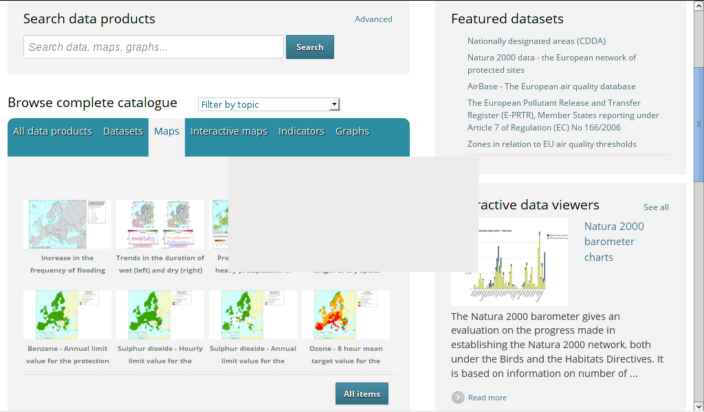
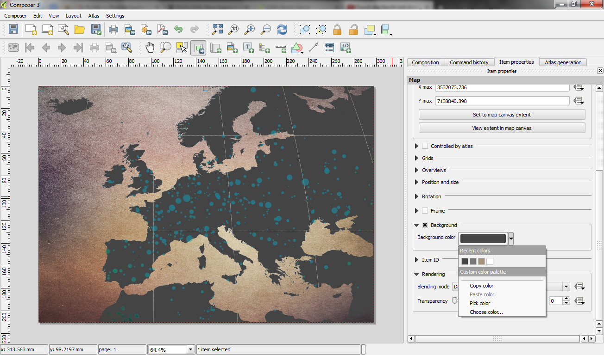

Sistemas de
Información
Geográfica

Qué necesitamos
Un ordenador (GNU/Linux, a ser posible)
Un navegador (Firefox o Chrome, a ser posible)
Un editor de textos
Internet
Una cuenta de correo para CartoDB (opcional)
Mapa básico
<html> <head> <link rel="stylesheet" href="http://dev.openlayers.org/examples/style.css" type="text/css"> <script src="http://openlayers.org/api/2.13.1/OpenLayers.js"></script> <style>.olMap {width:512px;height:256px;}</style> </head> <body> <div id="map-id"></div> <script> var map=new OpenLayers.Map("map-id"); var imagery = new OpenLayers.Layer.WMS("Global Imagery", "http://maps.opengeo.org/geowebcache/service/wms", {layers: "bluemarble"}; map.addLayer(imagery); map.zoomToMaxExtent(); </script> </body> </html>
Mapa básico
Datos
Formatos estándar:
- WKT (Well Known Text)
- POINT (30 30)
- LINESTRING(1 1, 5 5, 10 10, 20 20)
- POLYGON ((0 0, 10 0, 10 10, 0 0))
- WKB (Well Known Binary)
- POINT (2 4)
- 000000000140000000000000004010000000000000
Almacenamiento
Ficheros
- JPG, PNG, BMP, ... (Raster)
- GML, KML, ...
- Shapefile
Bases de Datos
CartoDB
Fuentes de Datos Libres
OpenStreetMap
IGN (PNOA)
Visualización de Mapas
Visualizar una geometría en dos dimensiones es fácil
¿Cómo visualizar una esfera sobre una pantalla plana?
Mapas
=" Mapas
Proyección Mercator
Mapas
Mapas

Datos geolocalizados
Mapas
Solución: diferentes proyecciones según la zona que queramos mostrar
Proyecciones EPSG (European Petroleum Survey Group)
Mapas
¿Y los mapas mundiales?
Mercator (EPSG4326) o EPSG900913
Software GIS
Servidores de Mapas
Análisis de Datos
Bases de Datos
Catálogo de Datos
Web Mapping (clientes para navegadores)
Clientes de Escritorio
Librerías para móviles
Software GIS
Servidores de Mapas
Análisis de Datos
Bases de Datos
Catálogo de Datos
Web Mapping (clientes para navegadores)
Clientes de Escritorio
Librerías para móviles
Servidores de Mapas
Estilos parecidos al CSS
Estándares WMS y WFS
Servidores de Teselas
Algunos incluyen el estándar WPS
Servidores de Mapas
MapServer
GeoServer
Degree
Software GIS
Servidores de Mapas
Análisis de Datos
Bases de Datos
Catálogo de Datos
Web Mapping (clientes para navegadores)
Clientes de Escritorio
Librerías para móviles
Análisis de Datos
Geoprocesamiento: Manipulación de información geoespacial
- GDAL
- GeoTools (OGC)
Routing: Enrutamiento y análisis de redes
- pgRouting
- OSRM
LiDAR: Manipulación y procesado datos láser
- PDAL (GDAL para puntos)
Otros
- GeoBatch: Flujos de procesamiento
- Mapnik: Renderizado de mapas
Software GIS
Servidores de Mapas
Análisis de Datos
Bases de Datos
Catálogo de Datos
Web Mapping (clientes para navegadores)
Clientes de Escritorio
Librerías para móviles
ISO 19125
- WKT, WKB
- Contains, Overlaps, Intersects
- Area, Distance
- Buffer, Intersection
ISO 19125
- PostgreSQL -> PostGIS
- H2 -> H2GIS
- SQLite -> Spatialite
- MySQL -> MySQL Spatial
- MongoDB (NoSQL)
Software GIS
Servidores de Mapas
Análisis de Datos
Bases de Datos
Catálogo de Datos
Web Mapping (clientes para navegadores)
Clientes de Escritorio
Librerías para móviles
CSW (OGC)
geoNetwork
pyCSW
Software GIS
Servidores de Mapas
Análisis de Datos
Bases de Datos
Catálogo de Datos
Web Mapping (clientes para navegadores)
Clientes de Escritorio
Librerías para móviles
Web Mapping
OpenLayers
Leafleet
Software GIS
Servidores de Mapas
Análisis de Datos
Bases de Datos
Catálogo de Datos
Web Mapping (clientes para navegadores)
Clientes de Escritorio
Librerías para móviles
Clientes de Escritorio
qGIS
uDig
gvSIG
Software GIS
Servidores de Mapas
Análisis de Datos
Bases de Datos
Catálogo de Datos
Web Mapping (clientes para navegadores)
Clientes de Escritorio
Librerías para móviles
Librerías para Móviles
OSMDroid
Masforge
OsmAnd
gvSIG mini
PhoneGap - Cordova (HTML5)
¿Os apuntáis a la Mapping Party?
Semana que viene
Ayudar a completar OpenStreetMap
Conocer a gente interesada en GIS
Y eso es todo

Más información en el panorama SIG libre, en el libro libre de GIS libre o en las reuniones de GeoInquietos